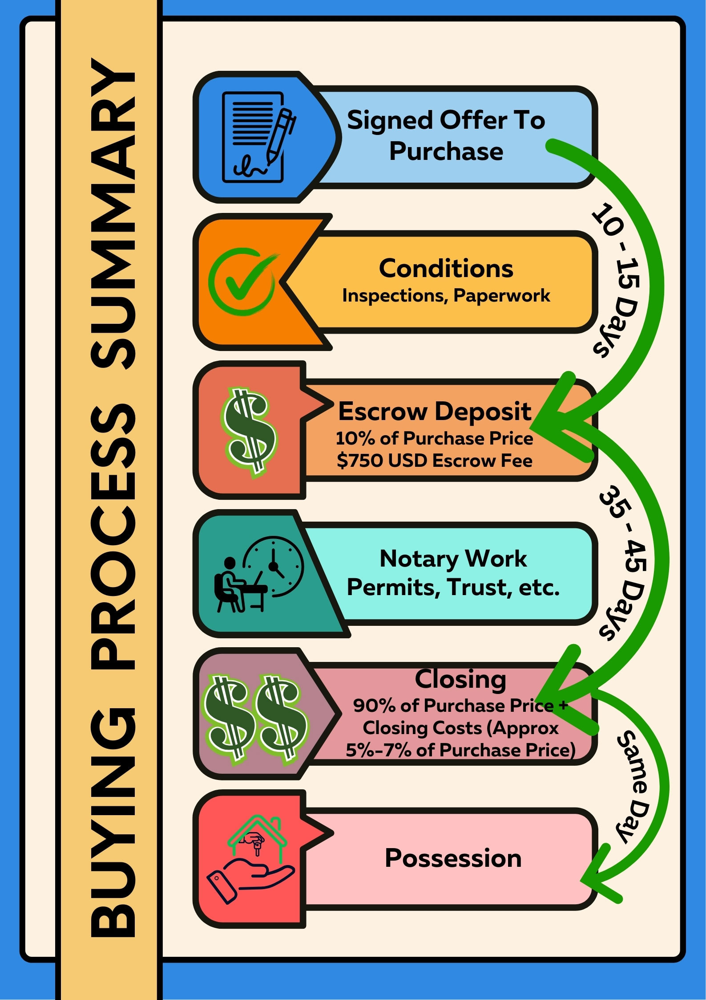

Buying Real Estate in Puerto Vallarta

As a foreigner...
Do I need to be a citizen or have temporary or permanent residence to purchase property?
- No, as long as you entered Mexico legally, you can purchase property here.
- You will also need two photo ID's, proof of current address, bank data, marriage certificate (if applicable), Federal tax ID (SSN if US citizen), and beneficiary information.
Do I receive a title to the property?
- If the property is within 50 kilometers of the ocean or 100 kilometers of an international border, then foreigners must hold the property in a 50-year, renewable trust (fideicomiso).
- As the "owner" (beneficiary of the trust), you have full rights to remodel, rent, or sell the property and beneficiaries can be assigned to the trust in the case of your death.
How long does it take to close a real estate transaction?
- Usually a property can be closed in 45–60 days.
Can I get a mortgage for real estate in Puerto Vallarta?
- Yes. Mortgages are available in Mexico, but you can expect to pay a higher interest rate than the current US mortgage rates.
- Banks often require minimum loan amounts, health evaluations, and life insurance.
- More than 90% of the foreign sales in the Puerto Vallarta area are cash deals.